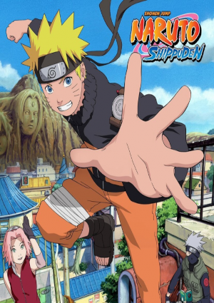

|  |
Naruto Shippuden+14 → Dub|Leg Ação | Artes Marciais | Comédia | Shounem Estúdio: Studio Pierrot | 20º temporada Sinopse:Dois anos e meio se passaram após a partida de Uzumaki Naruto e Jiraiya da vila de Konoha, para um treinamento a parte com Naruto. Logo ao voltar à vila os primeiros a encontrá-lo foram Sakura e Konohamaru. Agora Naruto e seus amigos não tem apenas que se preocupar com o resgate de Sasuke, mas também com uma organização chamada Akatsuki, que está atrás dos Jinchuurikis (ninjas que carregam um Bijuu em seus corpos, junto a isso inumeros outros acontecimentos ocorrem ao longo da série. Top 10 Animes Mais Assistidos Vote: ⭐ ⭐ ⭐ ⭐ ⭐ | Nota Média 9.5 (20 000 P) |
 |
Red | 25 de Maio Aparentemente infantil, mas de infantil não tem nada. Há mortes, sangues, drama, tristeza... Os fillers deram uma estragada no anime, mas se for pegar somente os episódios canônicos, é um dos melhores animes que já assisti. As lutas são muito bem desenvolvidas estrategicamente, não sendo limitado apenas a poder. 20 de 50 pessoas acharam isto útil. Esta resenha foi útil? SIM | NÃO |
 |
Zoro | 5 de Maio Aparentemente infantil, mas de infantil não tem nada. Há mortes, sangues, drama, tristeza... Os fillers deram uma estragada no anime, mas se for pegar somente os episódios canônicos, é um dos melhores animes que já assisti. As lutas são muito bem desenvolvidas estrategicamente, não sendo limitado apenas a poder. 58 de 70 pessoas acharam isto útil. Esta resenha foi útil? SIM | NÃO |
 |
Ana | 4 de Abril Aparentemente infantil, mas de infantil não tem nada. Há mortes, sangues, drama, tristeza... Os fillers deram uma estragada no anime, mas se for pegar somente os episódios canônicos, é um dos melhores animes que já assisti. As lutas são muito bem desenvolvidas estrategicamente, não sendo limitado apenas a poder. 60 de 100 pessoas acharam isto útil. Esta resenha foi útil? SIM | NÃO |
 |
White | 31 de Maio Aparentemente infantil, mas de infantil não tem nada. Há mortes, sangues, drama, tristeza... Os fillers deram uma estragada no anime, mas se for pegar somente os episódios canônicos, é um dos melhores animes que já assisti. As lutas são muito bem desenvolvidas estrategicamente, não sendo limitado apenas a poder. 5 de 30 pessoas acharam isto útil. Esta resenha foi útil? SIM | NÃO |
Carregar Mais Comentarios